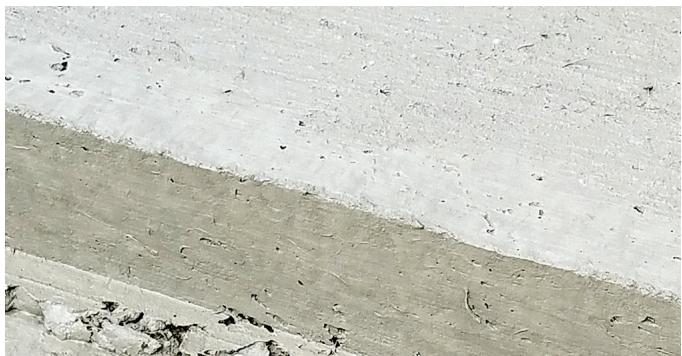
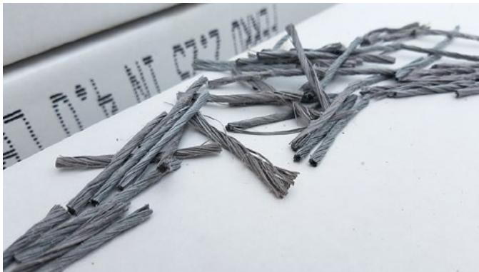
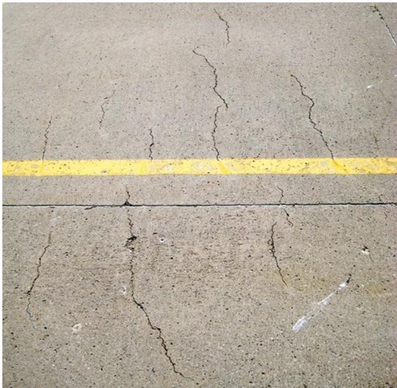
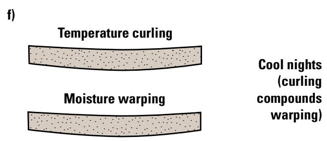
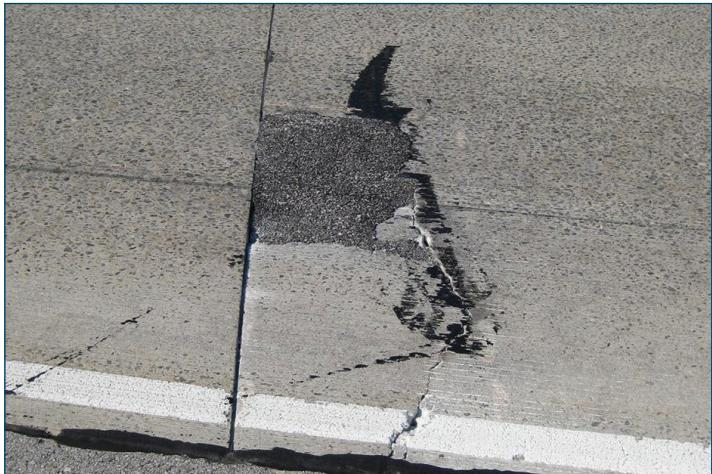
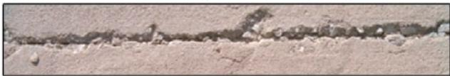
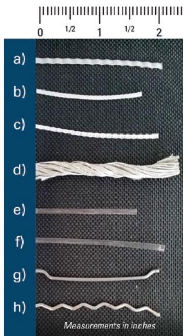
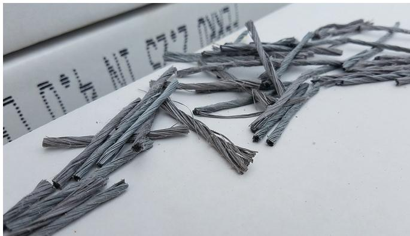

Fiber-Enhanced Concrete Performance
Fiber‑enhanced concrete performance is the improvement in concrete overlay behavior achieved by uniformly dispersing discrete synthetic (most commonly polypropylene or its copolymers) or steel fibers within a conventional cementitious matrix, typically at volume fractions between 0.1 % and 3 % (≈3–8 lb/yd³ for synthetics) [1][2][3]. The fibers act as distributed tie bars that bridge developing cracks, providing residual flexural strength—often about a 20 % residual‑strength ratio—that raises post‑crack toughness, fatigue resistance and load‑transfer capacity while keeping crack widths tight [4][5]. Because this residual strength allows the slab to retain bearing capacity after cracking and to control differential movement from temperature, curling or loading, designs can employ reduced thicknesses (as low as three inches) or longer joint spacing in thin overlays where vertical clearance or heavy traffic demand [6][7].
Sources (7)
Material purpose and applicability
The guides define fiber‑enhanced concrete performance as “Fiber‑enhanced concrete performance refers to the improvement in concrete overlay behavior achieved by adding synthetic reinforcing fibers, typically polypropylene or its copolymers, either as fine microfibers or larger macrofibers.” The incorporated fibers function like “The fibers act like tiny tie bars, raising the flexural and ultimate load capacity of the slab and providing residual post‑crack strength that improves toughness and fatigue resistance.” In addition, they “They also “help control differential slab movement as a result of temperature changes, curling/warping, or load induced movement,” reducing stresses at joints, and they give an “increased resistance to plastic shrinkage cracking when the concrete is in a plastic state.”” Because the fibers can deliver a residual strength ratio of about 20 %, designs may use a reduced slab thickness—approximately three inches—while still satisfying performance requirements: “When these macrofibers achieve roughly a 20 % residual strength ratio, the design can accommodate a reduced slab thickness—about three inches—while still meeting pavement performance requirements.” [1][2][3][4][5][6][7]
The following figure illustrates a concrete overlay incorporating these synthetic fibers.

Cross-section of a concrete overlay with synthetic fibers. [5]The image displays a cross-sectional view of a pavement structure consisting of a light-colored upper layer and a darker lower substrate. This figure illustrates the application of fiber reinforcement in thin overlays, where discrete synthetic fibers are dispersed within the cementitious matrix to improve performance.
[1] — Ch. 3 (p. 106); [2] — 1. Introduction (p. 46); [3] — App. B (p. 38), Fiber Reinforcement (p. 20); [4] — Ch. 3 (p. 30), Ch. 6 (pp. 60–62), App. A (p. 98); [5] — 5. Condition assessment profile (p. 43); [6] — App. B (pp. 62–65), Use of Fibers (pp. 23–24); [7] — 2. Overview of Thin Concrete O… (p. 21)
Fiber‑enhanced concrete is appropriate for thin overlays—generally four inches or less—placed over asphalt when vertical clearance limits slab thickness, the asphalt lift is very thin or poorly bonding, the base is inadequate, or conventional reinforcement such as dowels cannot be installed. It is also indicated where heavier truck traffic is planned or anticipated, longer joint spacing is desired, or a longer design life is required. In these situations the macro synthetic fibers “Help increase concrete toughness (allowing thinner concrete slabs and/or longer joint spacing)” and provide better load transfer and crack resistance. For typical parking‑lot overlays serving only lightweight vehicles with an adequate base and normal thickness, fiber reinforcement is generally unnecessary; a standard concrete overlay or another pavement material should be used instead. The guides do not specify particular climate, soil classification, or exposure conditions that would limit or favor the use of fibers. [6][7]
[6] — App. B (p. 62); [7] — 2. Overview of Thin Concrete O… (p. 21)
Composition and characteristics
Fiber‑enhanced concrete is defined as a composite of a conventional cementitious matrix with well‑graded aggregates into which discrete synthetic or steel fibers are uniformly dispersed and randomly oriented. “Fiber‑enhanced concrete performance is defined by a composite of the cementitious matrix plus dispersed macro synthetic or steel fibers whose volume fraction typically ranges from 0.1 to 3 percent, with a practical minimum dosage of about 3–4 lb/yd³ (≈0.26 % volume).” The fiber constituents include a broad range of polymeric materials – “Synthetic reinforcing fibers are manufactured from various materials such as acrylic, aramid, carbon, nylon, polyethylene, and polypropylene.” – with the most widely used being polypropylene and its copolymers, which are “nonabsorptive and not susceptible to alkali attack.” Steel fibers are also common; indeed, “Steel and synthetic fibers are the most common types of fiber used in paving.”
Both micro‑ and macro‑fibers may be employed. Fine micro‑fibers (diameter < 0.012 in.) are added at low rates – “Fine micro fibers with diameters less than 0.012 in. are typically used at low addition rates of 0.03 to 0.20 volume percent, equating to fiber quantities of 0.50 to 3.0 lb/ yd3.” – primarily to limit plastic shrinkage and settlement cracking. Macro‑fibers (diameter > 0.012 in.) are used at higher contents – “Macro fibers with diameters greater than 0.012 in. are typically used in dosages representing 0.20 percent by volume (3 lb/yd3) and higher, depending on the desired performance values.” – to provide post‑cracking toughness and crack‑width control. Typical macro‑fiber lengths range from 1.0 to 2.5 in., giving aspect ratios of 30–100; “The aspect ratio (l/d) of a fiber is calculated by dividing the fiber’s length (l) by its equivalent diameter (d).” Dosage levels vary with fiber type: “Typical macrofiber dosage rates in concrete overlay applications are between 3 and 8 lb/yd3 for synthetic fibers and 25 to 75 lb/yd3 for steel fibers, or approximately 0.2% to 0.5% by volume.”
The structural effect of the fibers is expressed through residual strength after cracking. When macro‑fibers achieve a “20% residual strength ratio” the slab can be thinned – “the slab thickness could be reduced to 3 in.” The primary hardened‑state benefits are captured in the statement that “The post‑cracking strength (Figure 6.5) and toughness are the primary hardened concrete properties improved by the addition of macrofibers.” These improvements translate into higher toughness, fatigue resistance, and the ability to keep cracks tight – “Fibers are used in concrete pavements to improve toughness and help keep cracks tight,” and also enhance resistance to plastic shrinkage – “Fibers can also increase concrete’s resistance to plastic shrinkage cracking.”
Fresh‑mix workability is affected: “Concrete workability, one such fresh property, may decrease with the addition of macrofibers” and “The addition of fibers will typically reduce slump 2 to 4 in. in a concrete mixture.” Excessive fiber content or inappropriate mixing can lead to balling – “Macrofiber balling can occur as a result of any combination of factors, including the properties of macrofiber type selected, the volume fraction of the macrofibers, the mixture’s workability.” Synthetic macro‑fibers are preferred for handling because they disperse more readily and resist corrosion – “Synthetic macrofibers are now favored because they disperse more readily (less balling) and resist rust, while steel fibers offer comparable reinforcement at higher weight.” [1][2][3][4][5][6][7]
The figure below illustrates the various types of macrofibers used in concrete mixtures.

Close-up view of twisted synthetic macrofibers on a white surface. [4]The image displays several short, gray strands with a distinct helical twist lying on a flat white background.
[1] — Ch. 3 (p. 106); [2] — 1. Introduction (p. 46); [3] — App. B (p. 38), Fiber Reinforcement (p. 20); [4] — Ch. 3 (p. 30), Ch. 6 (pp. 60–62), App. A (p. 98); [5] — 5. Condition assessment profile (p. 43); [6] — App. B (pp. 62–65), Use of Fibers (pp. 23–24); [7] — 2. Overview of Thin Concrete O… (p. 21)
Variations in the type of fiber, its source, dosage, and how it is introduced into the concrete mix produce predictable changes in crack‑control, toughness, residual strength, and slab geometry. Changing the fiber material and its proportion directly alters performance; low‑volume polypropylene microfibers mainly suppress plastic shrinkage, whereas macrofibers above 0.20 % volume provide flexural toughness and allow longer joint spacing. The effectiveness is also linked to slab thickness, joint geometry and other mix components, so composition and source shift the balance between crack mitigation and load transfer. Achieving a residual strength ratio of about 20 % enables a reduction of slab thickness to roughly three inches. Synthetic fibers are easier to handle and less prone to balling than steel fibers, which can settle due to higher density. Balling is influenced by fiber type, volume, addition sequence, mixer speed and blade condition; using a well‑graded aggregate gradation helps maintain workability. Typical dosage ranges differ: 3–8 lb/yd³ for synthetics versus 25–75 lb/yd³ for steel (≈0.2–0.5 % by volume). Keeping fiber content below about 0.5 % does not affect compressive or flexural strength but markedly enhances post‑cracking residual strength and overall toughness, although higher dosages lower slump and may require additional cementitious material or high‑range water reducers. Proper processing—correct charging order, mixer speed, and blade condition—prevents clumping and ensures uniform dispersion, which is essential for the fibers to bridge cracks, increase ductility, control differential slab movement, and improve resistance to plastic shrinkage cracking. Switching from steel to synthetic macrofibers improves handling, reduces corrosion risk, and yields higher residual flexural strength with tighter crack patterns. Within the typical 0.1–3 % volume range, fibers increase ductility, permit thinner slabs or longer joint spacing, and limit differential movement; dosages above about 4 lb/yd³ further reduce required thickness and markedly improve post‑crack behavior. Changing the fiber composition—using macro‑synthetic fibers instead of steel or blending both—modifies dispersion, rust susceptibility, and stiffness, influencing toughness, fatigue resistance and crack control. Adjusting proportioning between 0.1 % and 3 % volume directly scales these benefits, with a minimum of about 3–4 lb/yd³ sufficient to achieve noticeable improvements such as thinner slabs and longer joint spacing. [1][2][3][4][5][6][7]
The following figure illustrates plastic shrinkage cracks.

Plastic shrinkage cracks on a concrete surface with yellow markings. [1]The image displays a concrete pavement surface characterized by multiple fine, irregular cracks that are generally perpendicular to the horizontal yellow painted line. These features correspond to plastic shrinkage cracks, which occur when rapid evaporation of moisture from the concrete surface causes it to dry while still in a plastic state before initial set.
[1] — Ch. 3 (p. 106); [2] — 1. Introduction (p. 46); [3] — App. B (p. 38), Fiber Reinforcement (p. 20); [4] — Ch. 6 (pp. 60–62), App. A (p. 98); [5] — 5. Condition assessment profile (p. 43); [6] — App. B (pp. 62–65), Use of Fibers (pp. 23–24); [7] — 2. Overview of Thin Concrete O… (p. 21)
Key material properties
The performance of fiber‑enhanced concrete overlays depends on a set of physical, mechanical, chemical, and thermal properties. Physically, the guides emphasize diameter (micro < 0.012 in., macro > 0.012 in.) and volume dosage (from about 0.03 % to over 0.20 %) as key fiber characteristics, together with aspect ratio (length to equivalent diameter) and a volume fraction typically ranges from 0.1 % to 3.0 percent. Workability‑related physical attributes are highlighted: workability and entrapped air are the primary physical properties; fibers tend to lower slump and can increase air content; the addition of fibers will typically reduce slump 2 to 4 in. in a concrete mixture. Proper aggregate grading, sufficient paste content and water‑reducing admixture are needed to preserve workability and avoid fiber balling, as low‑density polymeric synthetic fibers disperse more readily than heavier steel fibers, which can settle if mixing is inadequate; proper aggregate gradation, sufficient paste content and water‑reducing admixture are needed to preserve workability and avoid fiber balling.
Mechanically, the sources note improve toughness, increase the ability of concrete to retain load‑bearing capacity after cracking, and increase concrete’s resistance to plastic shrinkage cracking. Fibers provide increasing toughness (enhanced post‑crack flexural performance) and ductility of concrete, and residual strength gain is used as the primary metric for load‑carrying benefit; if macrofibers are used in this design at a 20% residual strength ratio, the slab thickness could be reduced to 3 in. Flexural and ultimate load capacity of FRC slabs is higher than that of plain, undoweled concrete slabs, and load transfer efficiency across FRC contraction joints and cracks is higher than that of plain concrete slabs over time. Additional benefits include Hold cracks tightly together (enhancing aesthetics and concrete performance) and increased residual flexural strength enhances fatigue capacity.
Chemically, synthetic fibers are described as non‑absorptive and resist alkali attack and Synthetic fibers are easier to handle, are less prone to balling and clumping, and have no rust issues like steel fibers. For steel fibers, corrosion resistance is a key chemical consideration; synthetic macrofibers exhibit chemical durability that resists rust damage and maintains good dispersion (minimal balling). Interactions with high‑range water reducers affect bleed water, segregation, and freeze‑thaw durability.
Thermally, fibers are reported to helping control differential slab movement as a result of temperature changes, curling/warping, or load induced movement, and Control differential slab movement caused by curling/ warping, heavy loads, temperatures. This control allows the overlay to accommodate expansion, contraction, and warping without distress. [1][2][3][4][5][6][7]
The figure below illustrates how these thermal effects manifest as curling and warping in concrete slabs.

Schematic comparison of temperature curling and moisture warping in concrete slabs. [1]The figure displays two schematic cross-sections of a slab, labeled ‘Temperature curling’ and ‘Moisture warping’, both showing an upward curvature relative to the horizontal axis.
[1] — Ch. 3 (p. 106); [2] — 1. Introduction (p. 46); [3] — App. B (p. 38), Fiber Reinforcement (p. 20); [4] — Ch. 6 (pp. 60–62), App. A (p. 98); [5] — 5. Condition assessment profile (p. 43); [6] — App. B (pp. 62–65), Use of Fibers (pp. 23–24); [7] — 2. Overview of Thin Concrete O… (p. 21)
The properties of fiber‑enhanced concrete overlays are quantified through a hierarchy of geometric and mechanical descriptors. Fibers are first classified by size: fibers smaller than 0.012 in. are called microfibers … while larger fibers are termed macrofibers … . The amount of fiber is expressed as the volume fraction (vf), i.e., the percentage of the total concrete‑fiber composite occupied by fibers. Once mixed, the hardened performance is characterized primarily by the residual flexural strength obtained from standard testing; ASTM C1609 is prescribed to determine the residual strength value (f150) for a specific mix, fiber type and content. The resulting residual strength ratio—typically expressed as a percentage of the unreinforced modulus of rupture—is used as the quantitative indicator of the fibers’ contribution; when this ratio reaches about twenty percent, design procedures allow a reduction in slab thickness to three inches. Together, these geometric (size, volume fraction) and mechanical (residual strength ratio from ASTM C1609) metrics provide the classification framework that guides dosage selection and predicts improvements in toughness, fatigue resistance and crack‑width control. [1][2][4][5][6][7]
[1] — Ch. 3 (p. 106); [2] — 1. Introduction (p. 46); [4] — Ch. 6 (pp. 60–62), App. A (p. 98); [5] — 5. Condition assessment profile (p. 43); [6] — App. B (pp. 62–65), Use of Fibers (pp. 23–24); [7] — 2. Overview of Thin Concrete O… (p. 21)
Behavior and mechanisms
Fiber‑enhanced concrete overlays demonstrate superior behavior under a range of service conditions. Under traffic and other mechanical loads the material shows higher flexural and ultimate load capacity than plain concrete, retains load‑bearing ability after cracking, and provides a ductile post‑crack response with increased fatigue resistance. The added toughness also enables thinner slabs or wider joint spacing while keeping crack widths small. Moisture loss during early curing is mitigated; fibers reduce plastic‑shrinkage cracking and keep any cracks tightly closed. Temperature fluctuations, curling, warping and differential slab movement are restrained, improving load transfer across contraction joints and sawed cracks over time. Chemically, synthetic fibers are nonabsorptive and resistant to alkali attack, and unlike steel they do not rust. The performance mechanisms remain effective under typical service conditions when fibers are uniformly distributed at a minimum dosage of about 3–4 lb/yd³ (≈0.26 % volume). [1][3][4][5][6][7]
[1] — Ch. 3 (p. 106); [3] — Fiber Reinforcement (p. 20); [4] — Ch. 6 (pp. 60–62); [5] — 5. Condition assessment profile (p. 43); [6] — App. B (pp. 62–63), Use of Fibers (pp. 23–24); [7] — 2. Overview of Thin Concrete O… (p. 21)
Physical mechanisms: The performance of fiber‑enhanced concrete overlays depends on the geometry and material properties of the fibers—“the fibers’ aspect ratio, density, and especially their volume fraction (typically 0.1–3 % of the mix) dictate how well they disperse and avoid balling”, “The fibers’ geometry, stiffness, and surface characteristics, along with the concrete’s strength, all affect the residual strength.” Large surface area influences mixture workability and water demand: “their large surface area influences mixture workability and water demand.” Proper dispersion is essential because “Fiber balling (clumping) can occur if the fibers are not dispersed properly” and “Macrofiber balling can occur as a result of any combination of factors, including the properties of macrofiber type selected, the volume fraction of the macrofibers, the mixture’s workability…”. To mitigate balling and maintain workability, guides recommend well‑graded aggregates and admixtures: “To minimize the potential for balling and to increase workability, a well‑graded aggregate gradation is encouraged.” and “Generally, the addition of water-reducing admixtures can improve workability, consolidation, and finishing” as well as “Other options to increase workability include increasing paste content (cementitious material and water) to coat the aggregate and fiber while maintaining the desired water/cementitious materials ratio and adding a quality water‑reducing admixture.”
Chemical mechanisms: The fibers must remain stable in the highly alkaline cement matrix—“which are nonabsorptive and not susceptible to alkali attack”. Their large surface area also raises the demand for cementitious material and water, affecting hydration and strength development: “Chemically, the fibers’ large surface area raises the demand for cementitious material and water to preserve the intended water‑to‑cement ratio, influencing hydration and strength development; admixtures such as polycarboxylate reducers are often employed to offset slump loss and limit segregation of fiber and aggregate.” Adequate coating of paste on each fiber is needed for bond transfer: “Other options to increase workability include increasing paste content (cementitious material and water) to coat the aggregate and fiber while maintaining the desired water/cementitious materials ratio…”.
Mechanical mechanisms: Once bonded, fibers act as distributed tie bars that bridge developing cracks—“Mechanically, the fibers act as crack bridges; once a matrix crack opens, the fibers transfer tensile forces across it, providing residual flexural strength that raises fatigue capacity and allows the slab to sustain loads beyond the concrete’s nominal upper strength limit while limiting crack width and altering crack patterns.” This bridging “improve toughness and help keep cracks tight” and “increase the ability of concrete to retain loadbearing capacity after cracking”. Fibers also span cracks beneath saw joints—“Fibers can span the crack portion below the saw joint.” The resulting residual tensile capacity is quantified by a residual strength ratio: “If macrofibers are used in this design at a 20% residual strength ratio” which can enable thinner slabs—“the slab thickness could be reduced to 3 in.” Typical residual strengths range from 100 to 200 psi (“The residual strength value varies with the concrete mixture design used and the fiber type and content but is typically between 100 and 200 psi.”). The mechanical action also enhances joint performance: “provide improved resistance to cracking”, “enhance the joint load transfer provided by aggregate interlock”, “restrain joint openings”, and “help retain slab fragments in place when cracks do develop”. Overall, these mechanisms increase flexural and ultimate load capacity—“flexural and ultimate load capacity of FRC slabs is higher than that of plain, undoweled concrete slabs”—and improve fatigue resistance—“increase concrete’s resistance to plastic shrinkage cracking”, “Control differential slab movement caused by curling/ warping, heavy loads, temperatures, and so on (allowing longer joint spacing)”. The combined effect yields additional structural capacity allowing thinner sections or extended service life: “Additional structural capacity (allowing thinner concrete slabs or extended pavement service life)” and “increase concrete toughness (allowing thinner concrete slabs and/or longer joint spacing)”. [1][2][3][4][5][6][7]
[1] — Ch. 3 (p. 106); [2] — 1. Introduction (p. 46); [3] — App. B (p. 38), Fiber Reinforcement (p. 20); [4] — Ch. 3 (p. 30), Ch. 6 (pp. 60–62), App. A (p. 98); [5] — 5. Condition assessment profile (p. 43); [6] — App. B (pp. 62–65), Use of Fibers (pp. 23–24); [7] — 2. Overview of Thin Concrete O… (p. 21)
Durability and deterioration
The durability of fiber‑enhanced concrete overlays is challenged by several mechanisms identified across the guides. Reflective cracking is the primary deterioration mechanism observed in fiber‑reinforced concrete overlays. Fibers also face surface loss: synthetic macrofibers initially give the surface a hairy‑looking appearance, but after the pavement is opened to traffic, the synthetic macrofibers typically wear off, reducing crack‑control capacity.
Fresh‑mix properties can trigger damage. Concrete workability, one such fresh property, may decrease with the addition of macrofibers, and macrofiber balling can occur as a result of any combination of factors, including the properties of macrofiber type selected, the volume fraction of the macrofibers, the mixture’s workability, the charging sequence of the mixture’s constituents, the type and speed of the concrete mixer, and the condition of the fins in the mixer system. Fiber balling (clumping) can occur if the fibers are not dispersed properly, and steel fibers can also settle at the bottom of pavement if not properly mixed because of their higher density than synthetic fibers. Steel fibers also require more care to prevent balling of the fibers as a result of their tendency to sometimes clump together when exposed to cement and water.
Corrosion is a concern for steel fibers; they are susceptible to rust, whereas synthetic fibers … resistance to rust damage. The long‑term (greater than 15 years) duration of the benefit is not yet well established, particularly for synthetic fibers.
Mix design adjustments help mitigate these issues: Mix adjustments such as changes to the aggregate gradation, cement content, and admixture type and dosage are necessary to accommodate the higher fiber contents; To minimize the potential for balling and to increase workability, a well‑graded aggregate gradation is encouraged. The air content can be adjusted through changes in the air‑entraining admixture during the trial batches. [3][4][6][7]
[3] — App. B (p. 38); [4] — Ch. 6 (pp. 60–62); [6] — App. B (pp. 62–65), Use of Fibers (pp. 23–24); [7] — 2. Overview of Thin Concrete O… (p. 21)
Material characteristics that lower the susceptibility of fiber‑enhanced concrete to deterioration include the use of non‑absorptive, alkali‑resistant fibers such as polypropylene and its copolymers, which are not vulnerable to chemical attack. Synthetic fibers also improve durability because they are easier to handle, are less prone to balling and clumping, and have no rust issues like steel fibers. The effectiveness of the reinforcement depends on fiber geometry, stiffness, surface condition, and the strength of the surrounding concrete; these factors together govern the residual post‑crack strength that resists cracking and loss of load transfer. Adequate macro‑fiber dosage—generally at or above 0.20 % by volume (≈3 lb/yd³)—provides sufficient crack‑bridging capacity, while excessive dosages can increase surface roughness and promote fiber balling.
Exposure conditions that raise susceptibility are those that stress the crack‑bridging system or encourage degradation of the fibers. Rapid surface drying caused by wind‑driven evaporation can lead to plastic shrinkage cracking when the rate of evaporation exceeds the rate of bleed water. Aggressive environments that promote steel corrosion, freeze‑thaw cycles, high traffic loads, and inadequate joint finishing also diminish performance. Proper mixing practices (appropriate sequencing, mixer type and speed, and well‑maintained blades) and maintaining adequate paste content help keep fibers uniformly dispersed, thereby reducing balling and preserving the intended durability benefits. [1][3][4][6][7]
[1] — Ch. 3 (p. 106); [3] — App. B (p. 38); [4] — Ch. 6 (pp. 60–62), App. A (p. 98); [6] — App. B (pp. 62–65); [7] — 2. Overview of Thin Concrete O… (p. 21)
Material interactions and compatibility
The interaction of fibers with the surrounding materials governs the performance of fiber‑enhanced concrete overlays. Synthetic fibers used in pavement overlays interact favorably with the cement paste because they are non‑absorptive and resist alkali attack, allowing a stable mechanical bond that bridges microcracks and adds flexural toughness. To achieve this bond, sufficient paste must coat both aggregate and fibers while the target water‑to‑binder ratio is maintained; the guides note that “Other options to increase workability include increasing paste content (cementitious material and water) to coat the aggregate and fiber while maintaining the desired water/cementitious materials ratio and adding a quality water‑reducing admixture.” A well‑graded aggregate gradation is encouraged because “To minimize the potential for balling and to increase workability, a well‑graded aggregate gradation is encouraged,” and it also helps the fibers “enhance the joint load transfer provided by aggregate interlock” and “restrain joint openings, and help retain slab fragments in place when cracks do develop.” Proper mixing is essential. Steel fibers can settle due to their higher density (“Steel fibers can also settle at the bottom of pavement if not properly mixed because of their higher density than synthetic fibers”), and both steel and synthetic fibers may experience “Fiber balling (clumping) can occur if the fibers are not dispersed properly.” The occurrence of “Macrofiber balling can occur as a result of any combination of factors, including the properties of macrofiber type selected, the volume fraction of the macrofibers, the mixture’s workability, the charging sequence of the mixture’s constituents, the type and speed of the concrete mixer” is mitigated by using water‑reducing admixtures (“Generally, the addition of water‑reducing admixtures can improve workability, consolidation, and finishing”) and by adjusting mix proportions (“To preserve adequate fiber‑matrix bond at dosages above the minimum (≈4 lb/yd³), mix designs are adjusted: aggregate gradation is shifted toward well‑graded blends, fine‑aggregate content may be raised slightly, and cementitious material is increased modestly to maintain the target w/cm ratio”). Dosage influences the nature of the interaction. Fine microfibers at low rates (0.03–0.20 % volume) suppress plastic shrinkage, while macrofibers introduced at 0.2 % or higher “Macro fibers, in sufficient dosage, also increase fatigue performance” and “synthetic macro fibers may offer additional shear load transfer through fiber‑enhanced aggregate interlock.” In thin overlays, “Within thin overlays, synthetic fibers are mixed uniformly at adequate dosages so that they bond into the cement‑aggregate matrix and act as micro‑reinforcement,” which “raises post‑crack flexural toughness and overall ductility, enabling a thinner overlay to meet strength requirements.” The fiber geometry, stiffness, and surface characteristics together with concrete strength “all affect the residual strength,” resulting in “flexural and ultimate load capacity of FRC slabs is higher than that of plain, undoweled concrete slabs.” The combined material interactions produce several performance benefits. The fibers make the mixture more ductile, improving fatigue resistance (“The fibers can result in mixtures that are more ductile and thus commonly have improved fatigue resistance”) and increasing toughness to allow thinner slabs or longer joint spacing (“Help increase concrete toughness (allowing thinner concrete slabs and/or longer joint spacing)”). By bridging cracks they “help control differential slab movement caused by curling/warping, heavy loads, temperatures, etc.” and maintain tighter crack widths. Synthetic fibers also exhibit “better dispersion characteristics (i.e., less ‘balling’)” compared with steel. Overall, the guides agree that a stable fiber‑matrix bond, adequate paste coating, well‑graded aggregates, controlled mixing, appropriate dosage, and the use of water‑reducing admixtures are the key mechanisms by which fibers interact with cement, aggregate, and admixtures to enhance overlay performance. [1][3][4][5][6][7]
[1] — Ch. 3 (p. 106); [3] — App. B (p. 38); [4] — Ch. 3 (p. 30), Ch. 6 (pp. 60–62), App. A (p. 98); [5] — 5. Condition assessment profile (p. 43); [6] — App. B (pp. 62–65); [7] — 2. Overview of Thin Concrete O… (p. 21)
The only compatibility risk noted for fiber‑enhanced concrete overlays concerns corrosion of steel fibers. Steel fibers can rust if exposed to aggressive environments, which is why synthetic fibers are favored for their inherent resistance to rust damage. Apart from this corrosion issue, the source does not identify any incompatibilities with sulfates, organics, clays, reactive aggregates, contaminants, dissimilar materials, shrinkage restraint, or chemical attack. [6]
[6] — App. B (pp. 62–63), Use of Fibers (pp. 23–24)
Influence of production and placement
The guides agree that mixing dominates the ultimate performance of fiber‑enhanced concrete because it determines whether fibers are uniformly distributed or form weak zones. “Proper mixing is the dominant factor influencing the performance of fiber‑enhanced concrete because it controls how well the fibers are dispersed throughout the matrix; using an appropriate sequence, mixer type and speed, and maintaining clean mixing blades prevents fiber balling, which would otherwise create weak zones and reduce crack resistance.” The guides also note that “Fiber balling (clumping) can occur if the fibers are not dispersed properly,” and that many variables influence this phenomenon: “There are many factors that can affect fiber balling, including the following: • Type • Volume • Sequence of adding fibers • Type and speed of mixer • Condition of mixing blades.” To mitigate balling and preserve workability, a well‑graded aggregate is recommended – “To minimize the potential for balling and to increase workability, a well‑graded aggregate gradation is encouraged.”
Trial batches are emphasized as essential: “Trial batches are always recommended to confirm the correct sequence of fiber addition during the batching process and to ensure that the FRC mixture can meet all fresh property specifications.” The practice of adding macrofibers directly in the truck and rotating the drum for at least forty revolutions is also stressed – “adding macrofibers directly to the ready mix truck at the job site and mixing for a minimum of 40 revolutions at normal mixing drum speed.” Water‑reducing admixtures are repeatedly cited as necessary to offset slump loss: “Generally, the addition of water-reducing admixtures can improve workability, consolidation, and finishing,” and “If needed, a moderate dose of a water reducer followed by a polycarboxylate (if necessary) can be used to offset any loss in workability, especially for fiber dosages of 5.0 lb/yd3 and greater.”
For high‑dosage mixes the guides call for adjustments to aggregate gradation and cementitious content: “Mix adjustments such as changes to the aggregate gradation, cement content, and admixture type and dosage are necessary to accommodate the higher fiber contents,” and “such mixtures may require slightly more cementitious material (an additional 20 to 50 lb/yd3), slightly more water to keep the same water-to-cementitious materials (w/cm) ratio, and in some cases slightly more fine aggregate.” Synthetic macrofibers tend to disperse readily, whereas steel fibers “require more care to prevent balling of the fibers as a result of their tendency to sometimes clump together when exposed to cement and water,” making proper charging critical.
Placement practices are linked to fiber performance. The guides advise that “During placement the contractor should delay contraction‑joint sawing to avoid raveling and monitor for fiber balling, which signals a mixing‑sequence problem that must be corrected.” Prompt detection of balling prevents surface defects and loss of crack‑bridging capacity.
Compaction relies on restored workability. The recommendation that “A moderate dose of a water‑reducer or polycarboxylate admixture is often required to offset the slump loss (2–4 in.) so that mechanical vibration can achieve adequate compaction” ties mixing adjustments directly to the ability to consolidate the mix without segregation.
Finishing must be timed to protect fiber orientation. The guides state: “Finishing must be timed: brooming should occur only after the mix has set sufficiently; premature brooming pulls fibers to the surface and creates a rough or ‘hairy’ texture, whereas a clean, single‑direction broom pass yields an acceptable texture without compromising durability.”
Curing is not addressed in the cited excerpts, so no specific guidance on its influence can be derived from these sources. [3][4][6]
[3] — App. B (p. 38); [4] — Ch. 6 (p. 62); [6] — App. B (pp. 63–65)
The long‑term behavior of fiber‑enhanced concrete overlays is most strongly governed by construction variations that disturb slab geometry, joint execution, early‑age conditions, and the intended fiber dosage and distribution. Deviations in slab thickness, joint spacing, opening width or saw‑cut depth undermine the fibers’ shear‑transfer and crack‑control role – “The performance of fibers at sawn joints depends on slab thickness, joint spacing, joint opening width, saw‑cut depth, and mixture components.” Differential movement of individual slabs caused by temperature changes, curling/warping or load‑induced shifts in the underlying asphalt creates opened or misaligned joints that erode load‑transfer benefits – “Plain concrete in overlay applications occasionally exhibits differential movement of the individual slabs as a result of temperature, curling/warping, or load‑induced movement in the underlying asphalt.” and “As a result, joints may open up or not line up; this is principally an issue of aesthetics but can affect performance when materials and conditions exacerbate curling/warping.” Early plastic shrinkage cracking under windy, rapid‑evaporation conditions also compromises durability – “For concrete in a plastic state, fibers also offer the advantage of increased resistance to plastic shrinkage cracking. This type of cracking can occur in any concrete application when wind blows across the paved surface and the rate of evaporation exceeds the rate of bleed water coming to the surface of the concrete prior to setting.” Fiber dosage must match design residual‑strength requirements – “The required macrofiber content, volume percentage, and dosage rate depend on the specified residual strength value, constituents and proportions, and strength of the concrete.” – and stay within the prescribed range – “Vf typically ranges from 0.1 to 3.0 percent.” The most critical construction defect, however, is inadequate fiber dispersion or balling caused by mixing practices. Improper blending leads to clumping – “Fiber balling (clumping) can occur if the fibers are not dispersed properly.” – and density‑driven settling of steel fibers – “Steel fibers can also settle at the bottom of pavement if not properly mixed because of their higher density than synthetic fibers.” Balling may arise from any combination of fiber type, volume fraction, workability, charging sequence, mixer speed or fin condition – “Macrofiber balling can occur as a result of any combination of factors, including the properties of macrofiber type selected, the volume fraction of the macrofibers, the mixture’s workability, the charging sequence of the mixture’s constituents, the type and speed of the concrete mixer, and the condition of the fins in the mixer system.” – and reduces fresh‑mix uniformity – “Concrete workability, one such fresh property, may decrease with the addition of macrofibers.” When balling occurs, the fibers lose their bridging ability – “If steel fibers clump—or “ball”—because they are not properly charged into a well‑mixed batch, their ability to bridge cracks and improve fatigue resistance is lost.” – and synthetic macrofibers placed above low‑dose levels suffer the same loss – “When synthetic macrofibers are placed in the concrete at dosages above the low‑dose range, the most critical construction‑related issue is fiber clumping; if fibers aggregate instead of dispersing uniformly, the intended post‑crack flexural benefits and any yielding behavior are compromised.” Timing of contraction joint sawing also influences long‑term performance – “The use of fibers may require slightly delayed contraction joint sawing due to the fibers’ tendency to increase susceptibility to joint raveling if sawing is not timed properly.” Finally, the use of outdated high‑range water reducers can promote bleed water and surface defects that accentuate fiber visibility and reduce durability – “The use of older types of high‑range water reducers (HRWRs), such as naphthalenes and melamines, to reduce the water‑cement ratio should be limited because they tend to cause bleed water to accumulate and exacerbate spotty concrete setting, thereby possibly making the fibers more prominent in the pavement surface.” [1][3][4][6][7]
The following figure illustrates how such construction variations can lead to debonding when joint widths are not properly matched.

Severe debonding and joint misalignment in a concrete overlay. [7]The image displays a concrete pavement surface featuring a vertical saw-cut joint that exhibits significant vertical displacement, or faulting, between the adjacent slabs. A large area of material loss and spalling is visible along the edge of the joint, exposing dark aggregate beneath the surface layer.
[1] — Ch. 3 (p. 106); [3] — App. B (p. 38); [4] — Ch. 6 (pp. 60–62); [6] — App. B (pp. 62–65); [7] — 2. Overview of Thin Concrete O… (p. 21)
Selection, specification, and improvement
Selection of fiber‑enhanced concrete for an overlay is guided first by the performance objectives—toughness, tighter crack‑width control, retention of load‑bearing capacity after cracking, fatigue resistance and the need for residual strength to enable load transfer across joints. The guides note that “Fibers are used in concrete pavements to improve toughness and help keep cracks tight.” When a thin overlay must satisfy vertical restraints, provide residual strength, or produce tight cracks, fibers become the preferred reinforcement; “When a thin concrete overlay is required to meet vertical restraints, residual strength is necessary, or tight cracks are needed to provide load transfer between joints,” and “particularly for those overlays < 4 in.” Thin‑section constraints (≤ 4 in., ≤ 6 in.) and site‑specific limits such as vertical clearance, heavy traffic, longer joint spacing, inadequate base thickness, or the inability to place conventional dowels also drive fiber use.
The required residual tensile strength—often expressed as a 20 % residual strength ratio or a target value of 100–200 psi—determines the necessary fiber type and dosage; “If macrofibers are used in this design at a 20% residual strength ratio, the slab thickness could be reduced to 3 in.” Macro‑fibers are specified when additional structural capacity is sought (thinner slabs or extended service life), while micro‑fibers address plastic‑shrinkage or settlement cracking. Fiber type selection balances handling, durability and cost: “Synthetic fibers are easier to handle, are less prone to balling and clumping, and have no rust issues like steel fibers,” whereas steel fibers may be chosen for other performance reasons despite higher density and cost.
Dosage criteria are tied to fiber geometry. Fine micro‑fibers (diameter < 0.012 in.) are used at 0.03–0.20 % volume (≈0.5–3 lb/yd³): “Fine micro fibers with diameters less than 0.012 in. are typically used at low addition rates of 0.03 to 0.20 volume percent, equating to fiber quantities of 0.50 to 3.0 lb/ yd3.” Macro‑fibers (diameter > 0.012 in.) require ≥0.20 % volume (≥3 lb/yd³) with typical rates of 3–8 lb/yd³ for synthetic fibers and 25–75 lb/yd³ for steel fibers: “Typical macrofiber dosage rates in concrete overlay applications are between 3 and 8 lb/yd3 for synthetic fibers and 25 to 75 lb/yd3 for steel fibers, or approximately 0.2% to 0.5% by volume.” Minimum practical dosages of 3–4 lb/yd³ are cited across sources, and “Synthetic macrofibers starting at a minimum dosage of 4 lb/yd³ have shown success…” Joint‑spacing considerations state that sufficient macro‑fiber dosage permits spacing beyond conventional limits, whereas micro‑fiber quantities below 5 lb/yd³ must follow plain‑concrete guidelines: “Joint spacing for FRC pavement slabs with quantities of synthetic microfibers less than 5.0 lb/yd3 should follow the same guidelines as those for plain concrete or slabs with minimum conventional reinforcement.”
Mix‑design constraints require uniform fiber dispersion and workability. The guides stress that “Fiber balling (clumping) can occur if the fibers are not dispersed properly,” and list factors such as type, volume, addition sequence, mixer speed and blade condition. To mitigate balling, a well‑graded aggregate gradation and, when needed, water‑reducer admixtures are recommended: “To minimize the potential for balling and to increase workability, a well‑graded aggregate gradation is encouraged.” Trial mixes are advised to verify addition sequence, fresh properties and residual strength. Validation of the selected mix uses post‑cracking performance tests such as ASTM C1609 to confirm that the achieved residual strength meets the target: “It is recommended that ASTM C1609 be used to evaluate the residual strength value (f150) for a given concrete mixture, fiber type, and fiber content for concrete pavement overlay design.” [1][2][3][4][5][6][7]
[1] — Ch. 3 (p. 106); [2] — 1. Introduction (p. 46); [3] — App. B (p. 38), Fiber Reinforcement (p. 20); [4] — Ch. 3 (p. 30), Ch. 6 (pp. 60–62), App. A (p. 98); [5] — 5. Condition assessment profile (p. 43); [6] — App. B (pp. 62–65), Use of Fibers (pp. 23–24); [7] — 2. Overview of Thin Concrete O… (p. 21)
To maximize the performance of fiber‑enhanced concrete overlays, designers should first select synthetic macrofibers—most commonly polypropylene or polypropylene copolymers—and apply a dosage that meets the identified thresholds for the intended reinforcement. Macro fibers with diameters greater than 0.012 in. are typically used at volumes of about 0.20 % (≈3 lb/yd³) or higher, while dosages in the range of 4–15 lb/yd³ support longer joint spacing and improved shear transfer. When a residual strength ratio of 20 % is achieved, slab thickness can be reduced to three inches without sacrificing structural capacity.
Supplementing the macrofibers with a low‑dosage of microfibers (diameters <0.012 in., 0.03–0.20 % volume) helps control plastic‑shrinkage cracking. Uniform fiber distribution is essential; recommended practices include consulting the fiber manufacturer for the proper rate, adding fibers in the sequence specified by the producer, using a mixer and speed suited to the fiber form, maintaining clean mixing blades, charging the drum properly, and mixing for at least 40 revolutions to avoid balling.
Workability losses caused by higher fiber contents are mitigated by several complementary actions: employing a well‑graded aggregate gradation; increasing paste content (cementitious material plus water) so that both aggregate and fibers are fully coated while preserving the target w/cm ratio; incorporating high‑quality water‑reducing admixtures, and when dosages exceed about 5 lb/yd³, adding a moderate dose of a polycarboxylate superplasticizer. Air content can be fine‑tuned with adjustments to the air‑entraining admixture during trial batches.
Quality‑control measures include verifying that the selected synthetic fibers meet the approved list, confirming dosage and uniformity through trial mixes, and testing flexural residual strength (ASTM C1609) to obtain the f150 value for use in design calculations. The Residual Strength Estimator or similar tools can be used to select appropriate f150 values based on mix, fiber type, and traffic loading.
When very high fiber volumes are required (5–7.5 lb/yd³), modest increases in cementitious material (20–50 lb/yd³) and, if needed, fine aggregate help maintain the water‑to‑cementitious‑materials ratio. Blending synthetic fibers with steel fibers or using newer higher‑modulus synthetics can further increase toughness and crack control while preserving workability.
Finally, scheduling of contraction‑joint sawing may need slight delay to prevent joint raveling associated with fiber reinforcement. [1][2][3][4][5][6][7]
The figure below illustrates the unacceptable joint raveling that can occur if sawing is performed prematurely.

Close-up of unacceptable raveling at a concrete joint caused by premature sawing. [1]The image displays a longitudinal view of a concrete pavement surface featuring a transverse crack or joint that exhibits significant edge deterioration and loose aggregate, known as raveling.
[1] — Ch. 3 (p. 106); [2] — 1. Introduction (p. 46); [3] — App. B (p. 38), Fiber Reinforcement (p. 20); [4] — Ch. 6 (pp. 60–62), App. A (p. 98); [5] — 5. Condition assessment profile (p. 43); [6] — App. B (pp. 63–65), Use of Fibers (pp. 23–24); [7] — 2. Overview of Thin Concrete O… (p. 21)
Performance evaluation and implications
Evaluation of fiber‑enhanced concrete overlays relies on a combination of laboratory flexural testing, field observations, and long‑term performance monitoring. In the laboratory, the guides recommend ASTM C1609 flexural tests to obtain residual strength (f150) and quantify post‑cracking strength and toughness; improvement in flexural toughness is highlighted as a key contribution of fibers, and increased residual flexural strength is linked to greater fatigue capacity. Field evidence comes from side‑by‑side pavement sections where synthetic macrofibers at dosages around 4 lb/yd³ reduce visible cracking compared with fiber‑free zones, extend allowable joint spacing, and improve shear load transfer across joints. Long‑term performance is assessed through residual‑strength criteria embedded in design tools and by monitoring the ability of fibers to preserve load‑transfer efficiency across contraction joints under repeated loading, effectively acting like tie bars. [1][3][4][6]
The following figure illustrates this difference by comparing reflective cracking in fiber-free overlays against those reinforced with macrofibers.

A ruler and eight distinct fiber samples labeled a through h. [4]The figure displays a variety of discrete fibers, including straight synthetic strands, twisted bundles, and wavy steel fibers, positioned next to an inch scale for size reference.
[1] — Ch. 3 (p. 106); [3] — App. B (p. 38); [4] — Ch. 6 (pp. 60–62); [6] — App. B (pp. 63–64)
The inclusion of synthetic or steel fibers transforms a concrete overlay into a tougher, more ductile material. Low‑dose microfibers (≈0.03–0.20 % by volume) limit plastic‑shrinkage and settlement cracking, while macrofibers added at roughly 0.2 % or higher provide measurable residual strength that bridges cracks and sustains load after cracking. This behavior improves aggregate interlock at sawed joints, permitting longer joint spacing and reducing the need for frequent joint sawing. “Improvement in flexural toughness is one of the most valuable contributions of such fibers to concrete pavements.” The residual post‑cracking strength (typically 100–200 psi) is incorporated into design calculations, so that when “If macrofibers are used in this design at a 20% residual strength ratio, the slab thickness could be reduced to 3 in,” designers can specify thinner slabs without sacrificing vertical restraints. The guides also note that “flexural and ultimate load capacity of FRC slabs is higher than that of plain, undoweled concrete slabs,” which supports higher fatigue resistance and longer service life. In practice, fibers increase ductility and allow “Increase concrete toughness (allowing thinner concrete slabs and/or longer joint spacing),” enabling extended joint spacing and reduced material usage. Because fibers reduce workability by 2–4 in., the guides recommend using water‑reducing admixtures, extra paste, and careful mixing to avoid balling; synthetic macrofibers disperse readily and do not corrode, simplifying construction. In service, the crack‑bridging action keeps cracks tight, limits differential slab movement from temperature changes, curling or load, and lowers plastic‑shrinkage cracking, which together enhance durability and lower maintenance frequency. [1][2][3][4][5][6][7]
The figure below illustrates synthetic macrofibers.

Close-up of synthetic macrofibers used in concrete mixtures. [3]The image displays a collection of discrete, twisted synthetic macrofibers scattered on a white surface.
[1] — Ch. 3 (p. 106); [2] — 1. Introduction (p. 46); [3] — App. B (p. 38), Fiber Reinforcement (p. 20); [4] — Ch. 3 (p. 30), Ch. 6 (pp. 60–62), App. A (p. 98); [5] — 5. Condition assessment profile (p. 43); [6] — App. B (pp. 62–65), Use of Fibers (pp. 23–24); [7] — 2. Overview of Thin Concrete O… (p. 21)
References
- Integrated Materials and Construction Practices for Concrete Pavement: A State-of-the-Practice Manual (2nd edition IMCP Manual, 2019) [link]
- Guide to the Design of Concrete Overlays Using Existing Methodologies (2012) [link]
- Guide to Concrete Trails (2019) [link]
- Guide to Concrete Overlays (4th Edition–Optimized for fast web viewing–2021) [link]
- Guide for the Development of Concrete Overlay Construction Documents (2018) [link]
- Guide to Concrete Overlays of Asphalt Parking Lots (2nd Edition–Optimized for fast web viewing–2022) [link]
- Preservation and Rehabilitation of Urban Concrete Pavements Using Concrete Overlays: Solutions for Joint Deterioration in Cold Weather States (Guide–2014) [link]